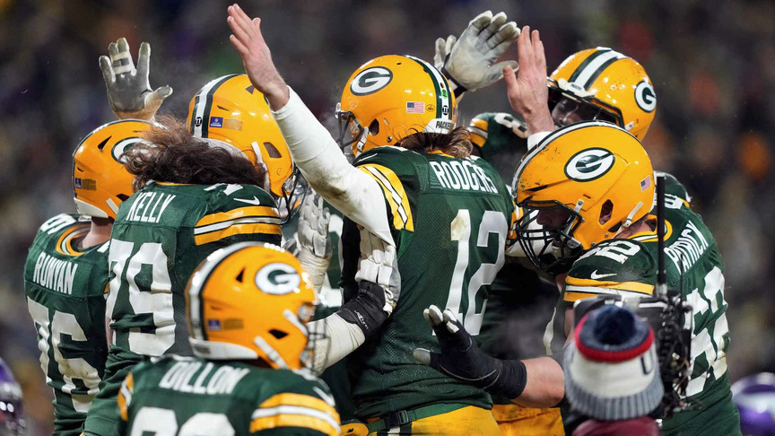
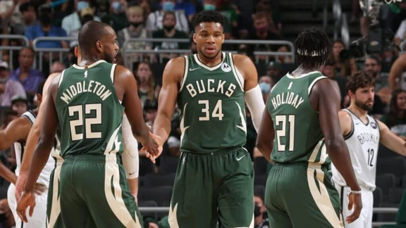

Wisconsin Sports Teams
Green Bay Packers
The Green Bay Packers are an American football professional team headquartered in Green Bay, Wisconsin. The Packers are a member of the National Football Conference (NFC) North division of the National Football League (NFL). It is the NFL's third-oldest club, having been founded in 1919, and the only non-profit, community-owned major league professional sports team in the United States. Lambeau Field has hosted home games since 1957.
Milwaukee Bucks
The Milwaukee Bucks are a professional basketball club headquartered in Milwaukee, Wisconsin. The Bucks are a part of the National Basketball Association (NBAEastern )'s Conference Central Division. The squad was formed as an expansion team in 1968 and now plays at Fiserv Forum.
Milwaukee Brewers
The Milwaukee Brewers are a Milwaukee-based American professional baseball franchise. They participate in Major League Baseball (MLB) as a National League (NL) Central division member club. The team is known as the Brewers because of the city's connection to the brewing industry. Since 2001, the Brewers have played their home games at American Family Field, which will be known as Miller Park through the 2020 campaign and has a 41,900-seat capacity.